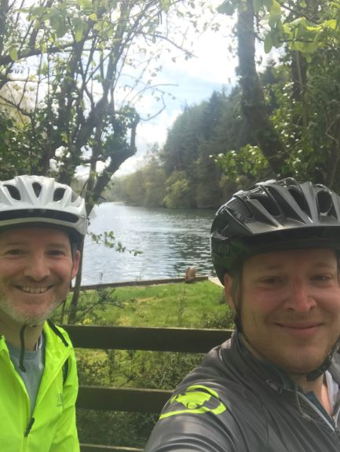
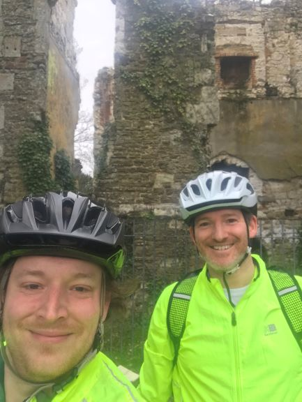
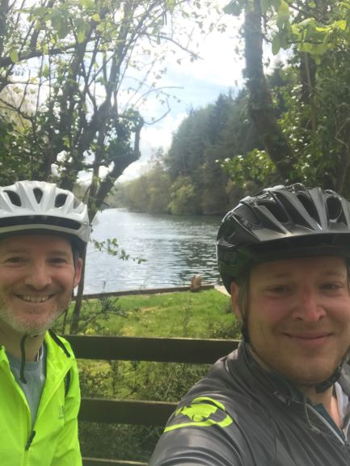
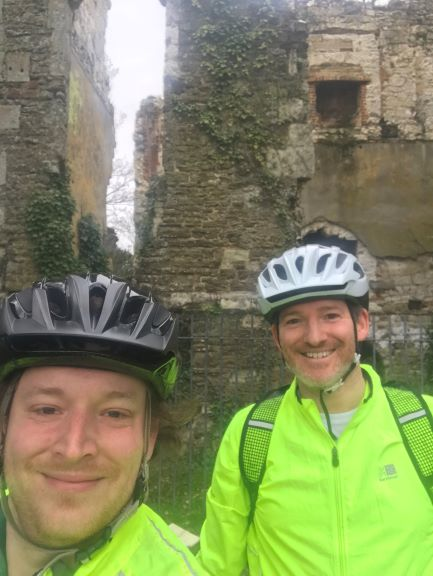

April - May 2021
2) Horley to Ardingly Reservoir
Lunch at the Half Moon Pub
1) Horley to Bletchworth Castle Loop
Horley to Leigh, Brockham, Bletchworth Castle and back via Lonesome Lane
April - May 2021
Lunch at the Half Moon Pub
Horley to Leigh, Brockham, Bletchworth Castle and back via Lonesome Lane
